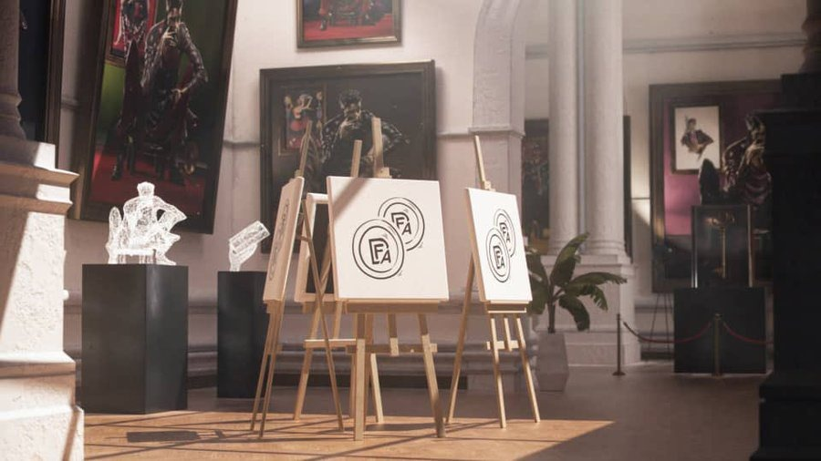

DIGITAL
FINE ART
Featured Collections
HOME
WHO ARE WE?
Digital Fine Art (DFA) seeks to bridge the gap between traditional and digital art, fostering a connection between these two distinct worlds. We facilitate artists in transforming their creations for digital platforms, maintain an exclusive club for art enthusiasts, and are in the process of building an interactive online museum known as the Staking Museum, which offers rewards to art owners. DFA's core belief is in the significance of the digital age for the future of art, and are committed to pioneering this transition. DFA empowers artists to adapt their works for the digital realm, creates a community of art lovers through L'Atelier, and establishes a digital gallery for artistic engagement and rewards. Our vision is to not only recognize the inevitability of the digital age's role in art but also to lead the way in embracing and shaping this future.
L'Atelier
L'Atelier
This is a very very very private club for DFA collectors, investors and supporters. L’Atelier is so exclusive that it only has space for 1000 members who will also has access to the many members only benefits it has to offer like invite to private events, arts from prominent artists, Part of the decision-making process for future collections.
genesis art collection
GENESIS ART COLLECTION
The first art collection that is going to be available digitally and physical is called the Genesis CIgar man by renowned artist THIERRY LIGISMOND. The physical arts already sold to investors for $10,000.
mint
Mint
The keys of L’Atelier are going to be minting on the 9th of November 2023, this is going to be a FREE MINT with a total supply of 1000 but only 250 keys are going to be mintable. 250 keys will be airdropped to web2 investors and the remaining 500 are going to be reserved in the team’s vault.
team
TEAM
The team is filled with so many web2 and web3 superstars and seasoned professionals with a lot of experience.
- Co-Founder - Nathaniel Assayag
- Co-Founder - Nicolas Zehnder
- Co-founder - Victor Zimeray
- Advisor- Mr Hmmm
- Advisor - gpunknft